Four groups
Students work in 4 groups
There are some news headlines and some categories: Sport, Laws, Education, etc…
Raise your hands to get turns and choose the correct category for the headlines.
Unit 4
ASEAN and
Viet Nam
ASEAN NEWS
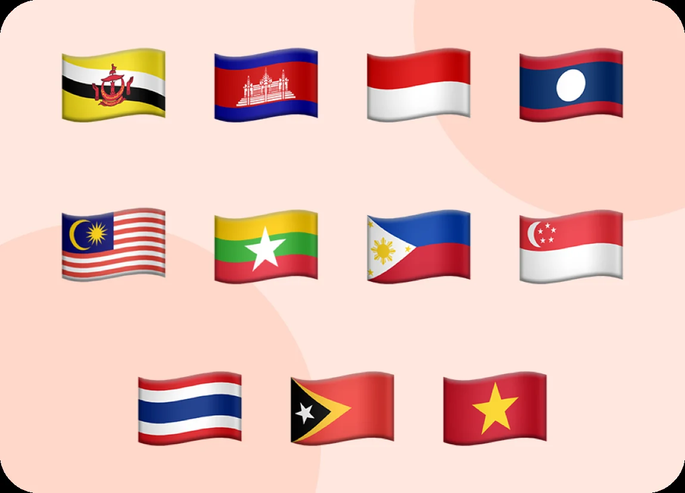
Look at the flag. Name the country!
READY • THINK • GUESS
PLAY GAMEStudents work in 4 groups
There are some news headlines and some categories: Sport, Laws, Education, etc…
Raise your hands to get turns and choose the correct category for the headlines.
Vietnam win 2-1 against Dortmund
ASEAN member states reaffirm their commitment to human rights dialogue
Vietnam gold price drops despite global gain
Rural schools in Laos give life to students’ dreams (video)
ASEAN food fest opens in downtown Ho Chi Minh City
Repairing the US–Asean relationship requires commitment and time
Work in pairs.
1. Where do you most often read the news?
2. What is your favourite news section?
I usually read news on social media/news websites.
My favourite section is Culture because...
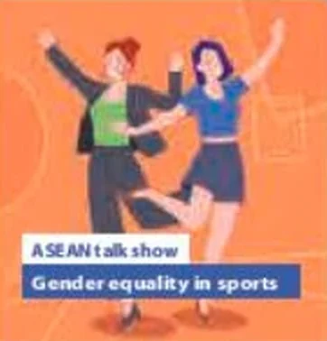
Make a prediction!
Read the news more easily.
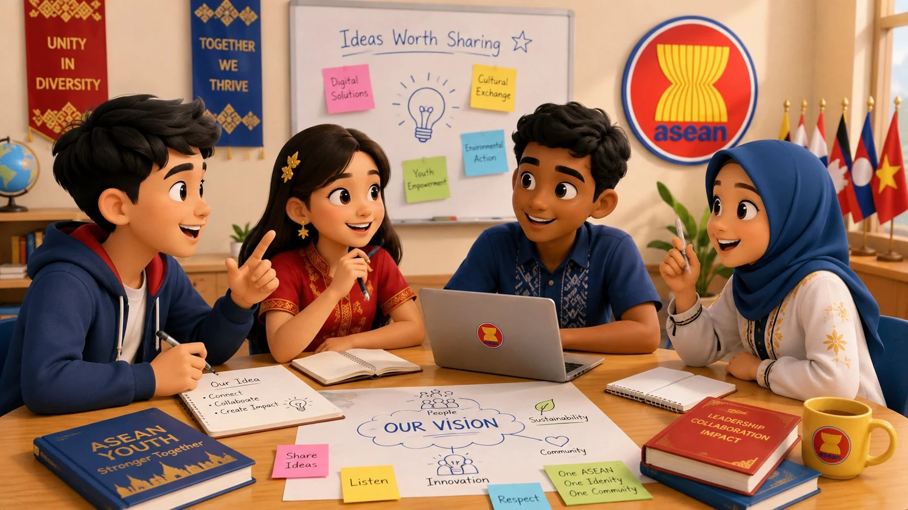
We will learn key words first, then use context to match highlighted words in Exercise 3.
• Guess meaning from context
• Skim for headlines
• Scan for specific information
LOOK AT THE PICTURE · Use the letters to guess the word.
s _ p p _ r t
Say the word before the answer appears!
r a _ s _ a w _ r _ n _ s s
(v phr)
(v phr) /reɪz əˈweənəs/
nâng cao nhận thức
To raise awareness of ASEAN, the AKC organises an ASEAN School Tour Programme.
raise awareness of/about something
d i _ c _ s s
(v)
/dɪˈskʌs/
/dɪˈskʌʃn/
thảo luận / cuộc thảo luận
They discussed why ASEAN was important to Korea.
…exciting discussions on current social and youth issues.
s t _ e _ g _ h _ n
(v)
(v) /ˈstreŋθn/
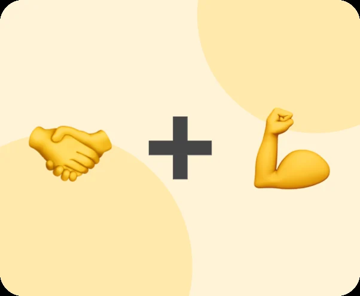
tăng cường, củng cố
…how to strengthen ASEAN-Korea relations.
strong (adj) → strength (n) → strengthen (v)
l o _ k f _ r
(phr v)
(phr v) /lʊk fɔː(r)/
tìm kiếm
SSEAYP is looking for participants.
look for = search for
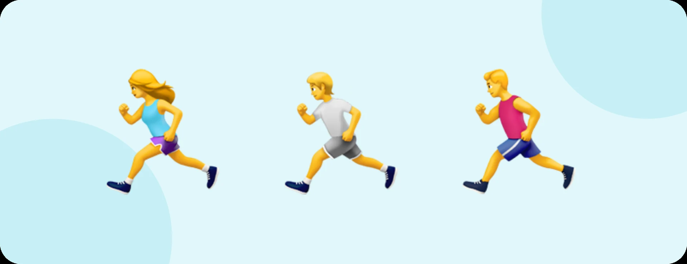
p a _ t _ c _ p _ n t
(n)
/pɑːˈtɪsɪpeɪt/
/pɑːˈtɪsɪpənt/
/pɑːˌtɪsɪˈpeɪʃn/
participate → participant → participation
Meaning: tham gia / người tham gia / sự tham gia
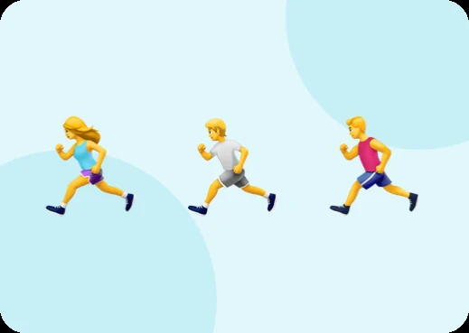
participate → participant → participation
Meaning: tham gia / người tham gia / sự tham gia
SSEAYP is looking for participants.
All participants agreed that…
s u _ p _ r t
(v)
(v) /səˈpɔːt/
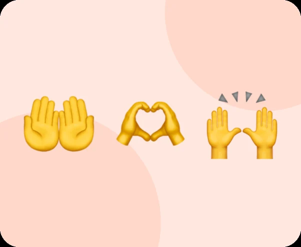
hỗ trợ, ủng hộ
Organised by the government of Japan and supported by the governments of Southeast Asia…
support sb/sth • give support
o p _ o _ t _ n _ t y
(n)
(n) /ˌɒpəˈtjuːnəti/
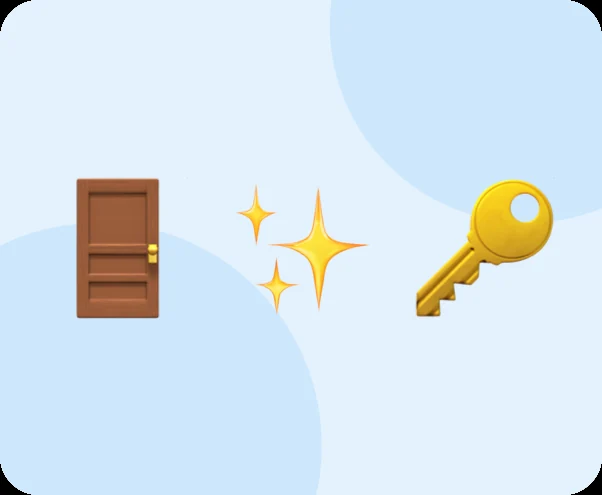
cơ hội
Young people will have the opportunity to take part in exciting discussions…
an opportunity to do something
i _ s _ e
(n)
(n) /ˈɪʃuː/
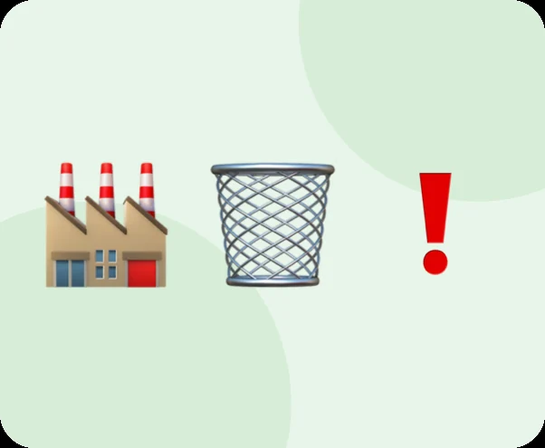
vấn đề
…discussions on current social and youth issues.
social issue • youth issue
g e _ d _ r e q _ a _ i _ y
(n)
(n) /ˈdʒendər iˈkwɒləti/
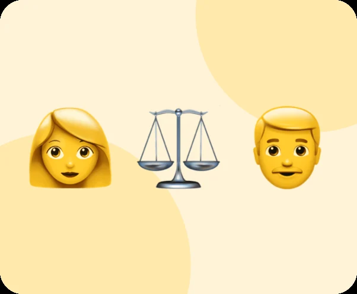
bình đẳng giới
Its goal was promoting gender equality in and through sport.
Not "gender quality"
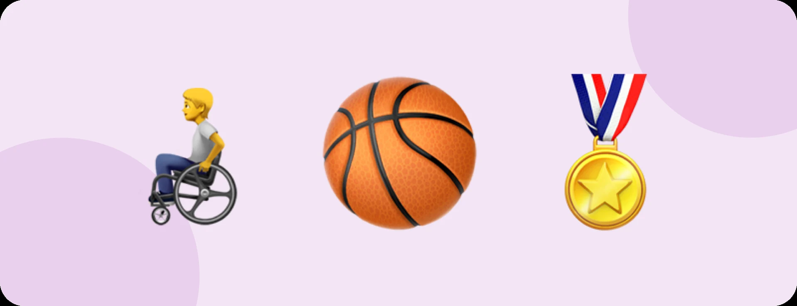
d i _ a _ i _ i _ y
(n)
(n) /ˌdɪsəˈbɪləti/
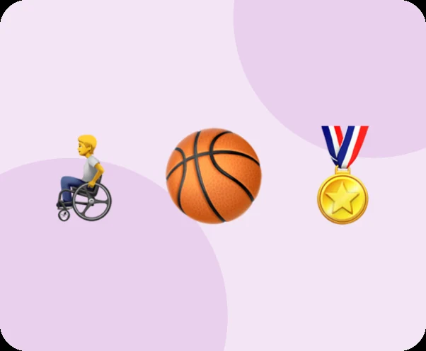
khuyết tật
The talk show also discussed the rights of sports people with disabilities.
people with disabilities
Use: participate / participant / participation
Over 300 young ________ will join the programme.
All students are encouraged to ________ in cultural activities.
Thank you for your active ________ in the talk show!
Over 300 young participants will join the programme.
All students are encouraged to participate in cultural activities.
Thank you for your active participation in the talk show!
2 teams. Each team sends 1 player to sit with their back to the board.
Your team explains the word in ENGLISH or with gestures.
Don't say the word! No Vietnamese!
The first player to guess correctly wins a point.
Work in groups of 3: Student A, B, C. Close your books.
A reads News 1, B reads News 2, C reads News 3. Don't show your paper!
Underline: Who? What? Where?
Tell your group about your news: “My news is about…”
Choose the best heading for each news item.
Choose the correct heading for each news item. There are TWO extra headings.
Don't miss this opportunity to represent your country!
Travelling to ASEAN countries
Equality in sport for ASEAN women
Korean and ASEAN students
Volunteers needed to take part in cultural exchanges
News 1: ___ · News 2: ___ · News 3: ___
Korean and ASEAN students
Don't miss this opportunity to represent your country!
Equality in sport for ASEAN women
E is wrong because the participants are not volunteers. They represent their countries.
Clues: ASEAN-Korea Centre • 121 Korean and Asian students
Clues: is looking for participants • opportunity • take part
Clues: women in sport • gender equality • female representatives
Read quickly. Do not translate every word. Find the main idea.
Listen to the riddle and find the
highlighted word in the text.
?
?
?
?
I'm a noun. I exist between two countries, two friends, or a teacher and students.
? ? ?
I'm a noun. I exist between two countries, two friends, or a teacher and students.
RELATIONS
I'm an adjective. You feel me when you visit a new country and learn something surprising.
? ? ?
I'm an adjective. You feel me when you visit a new country and learn something surprising.
EYE-OPENING
I happen when you watch a football match on YouTube at the same time it's being played.
? ? ?
I happen when you watch a football match on YouTube at the same time it's being played.
LIVE-STREAMED
Athletes do this for Viet Nam at the SEA Games.
? ? ?
Athletes do this for Viet Nam at the SEA Games.
REPRESENT
(n) /rɪˈleɪʃnz/
mối quan hệ
…how to strengthen ASEAN-Korea relations.
relations between A and B
(adj) /ˈaɪ əʊpənɪŋ/
mở mang tầm mắt, gây ngạc nhiên vì học được điều mới
…eye-opening cultural exchanges.
an eye-opening experience
(adj) /ˈlaɪv striːmd/
được phát trực tiếp trên mạng
The talk show was live-streamed on the ASEAN webpage.
live-stream (v/n)
(v) /ˌreprɪˈzent/
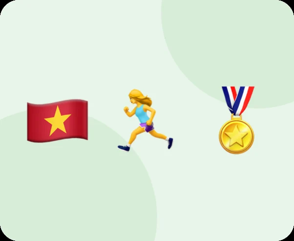
đại diện
…represent their countries at international events.
representative (n)
the way in which people or groups of people behave towards each other
surprising because you learn something new
to act officially for another person or organisation
shown over the Internet
WORD BANK discussion / eye-opening / represent / supported
Cultural exchanges can be very ______ because you learn new things.
The programme is ______ by several governments.
WORD BANK discussion / eye-opening / represent / supported
Athletes ______ their countries at international events.
Students joined a ______ about youth issues.
Cultural exchanges can be very eye-opening because you learn new things.
The programme is supported by several governments.
Athletes represent their countries at international events.
Students joined a discussion about youth issues.
Something eye-opening I learned this year is…
A live-streamed event I watched was…
Answer with NO MORE THAN FOUR words and/or a number.
Teams write their answers on mini boards in 20 seconds. Correct answers earn +10 base points before the Lucky Box.
READ • WRITE • REVEAL • CHOOSE
121
welcomed 121 Korean and Asian students
50 days
the journey will last for 50 days
current social issues
current social and youth issues
in December
took place in December
on the ASEAN webpage
live-streamed on the ASEAN webpage
I'd like to take part in … because …
It's a great opportunity to …
I think it would be eye-opening because …
Do you want to find more information about any of the news items in Exercise 2? Which one? Why?
• I'd like to know more about News Item __ because...
• I'm interested in...
• I think it is important because...
• I want to find out more about...
Optional speaking extension
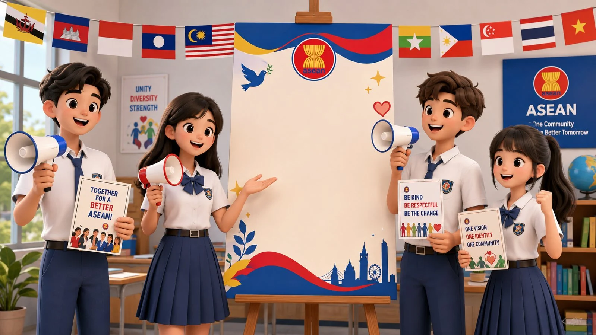
Choose one news item and report it in 3–4 sentences.
• Good morning. Here is today's ASEAN news.
• This news is about...
• It happened in/on...
• I think it is interesting because...
Optional speaking extension
Vote: Best Reporter • Best English • Best News Team
Who guessed correctly?
What did we practise today?
choose suitable headlines
find specific information quickly
understand ASEAN news words
give opinions about news items
Learn the new words by heart.
Write 4–5 sentences: Which programme
would you like to join? Why?
See you next lesson!
12 questions · 2–4 teams · classroom coins
Start with $1,000. Wager $100, $200 or $300.
Correct: win the wager. Incorrect: lose it. At $0, a correct recovery answer earns $100.